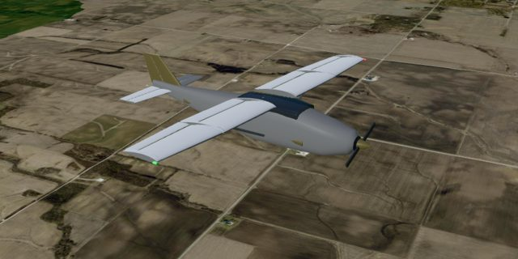
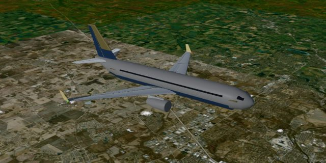
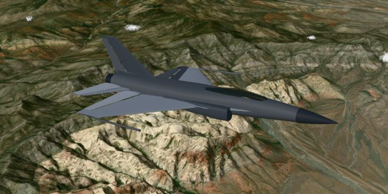

Take off from any of 9,800 real airports and fly anywhere on Earth over real satellite imagery, real terrain and 3D cities. No download.
Cesium World Terrain, satellite imagery and Google photorealistic 3D cities, streamed as you fly, with a free fallback if any of them is down.
Six-degree-of-freedom model checked against the real Cessna 172, A320 and F-16: stall speeds, take-off runs, climb rates and top speeds.
Heading, altitude, vertical speed, speed and direct-to navigation. APP flies the approach, de-crabs in crosswinds, lands and brakes to a stop.
Runway edge, threshold, centre-line and approach lights, and a working PAPI that shows two white and two red on the glide path.
Primary flight display with flight-path marker, approach diamonds and radio altimeter; moving map with nearby airports. Altitudes are above sea level.
Keyboard, touch screen, gamepad, or joystick + throttle + rudder pedals at once. Move a control to bind it; setups are saved per device.
Clouds, wind, turbulence, haze and any time of day, with aircraft lights, strobes and a landing light after dark.
Assisted mode keeps you out of stalls and lines you up in crosswinds. Switch to Realistic when you are ready.

Single-engine, high-wing trainer. Slow, forgiving and the best way to learn.
stall 51 kt · cruise 110 kt · ≈ Cessna 172
Twin-jet airliner with spoilers, reversers, autothrottle and autoland.
Vref 135 kt · Mach 0.78 cruise · ≈ A320
Single-engine fighter: afterburner, 9 g, Mach 2 at high altitude.
Mach 2.07 at 40,000 ft · ≈ F-16| Throttle up | Hold R or press Home (touch: slide the throttle up) |
| Lift off at the rotate speed | Gently hold S, then let go: assisted mode holds the climb |
| Fly | WASD or arrows, QE rudder |
| Land by yourself or with the autopilot | Set a destination, then press APP on the autopilot panel |
| Everything else | Menu → Controls |